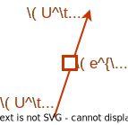
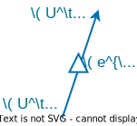

3 Compact Boson
\[ \DeclareMathOperator{\vol}{vol} \DeclareMathOperator{\U}{U} \DeclareMathOperator{\SU}{SU} \DeclareMathOperator{\imunit}{i} \DeclareMathOperator{\id}{id} \DeclareMathOperator{\Map}{Map} \newcommand{\stdim}{D} \]
Here we consider compact boson, where the field \(\phi\) is real and subject to the identification \[ \phi(x) \cong \phi(x) + 2\pi. \] We take the Lagrangian to be \[ \mathcal{L} = \frac{R^2}{4\pi}\int_M \mathop{d\phi} \wedge \mathop{*}\mathop{d\phi}. \] We can normalize the field \(\phi\) so that it has the kinetic term with a fixed coefficient, in which case the normalized field has a periodicity radius proportional to \(R\).
The theory has the shift (or “momentum”) \(\U(1)\) symmetry \[ \phi^\alpha = \phi + \alpha \] with identification of the parameter \(\alpha \cong \alpha + 2\pi\). One can add a periodic potential \(V(\phi)\) and restrict oneself to a discrete symmetry preserving the potential.
In addition to the shift symmetry, the system has other generalized symmetries:
- winding \(\U(1)\) (\(\stdim-2\))-form symmetry (Gaiotto et al. 2015), and
- when \(\stdim=2\) and \(R^2\) is rational, there exists a T-duality symmetry that is in general non-invertible (Choi et al. 2022; Cordova and Ohmori 2023; Nagoya and Shimamori 2023; Niro et al. 2023:).
The purpose of this section is to understand these generalized symmetries, but before that we review the shift symmetry.
3.1 Trivial Operator and Shift Symmetry Operator
We start from the identity operator \(\id[W^{\stdim-1}]\) that cuts and glues the path-integral. The construction is almost the same as before, but when we glue the fields \(\phi_L\) and \(\phi_R\) along \(W^{\stdim-1}\), the gluing can be up to a integer multiple of \(2\pi\): \[ \phi_L(x) = \phi_R(x) + 2\pi n \] with an integer \(n\) (assuming \(W^{\stdim-1}\) is connected). Therefore, the gluing part of the path-integral is \[ \id[W^{\stdim-1}] = \sum_{n\in\mathbb{Z}}\int \mathcal{D}^{W^{\stdim-1}}\lambda \exp\left(\imunit\int_{W^{\stdim-1}} \lambda\left(\phi_L-\phi_R - 2\pi n\right)\right)\vol_{W^{\stdim-1}}. \] We can sum \(n\) out to restrict \(\lambda\) to satisfy \[ \int_{W^{\stdim-1}}\lambda \vol_{W^{\stdim-1}} \in \mathbb{Z}. \] An integration over such lambda can be replaced by integration in terms of \((\stdim-2)\)-form \(\U(1)\) gauge field \(V\) with \[ \mathop{dV} = 2\pi \lambda\vol_{W^{\stdim-1}}. \] Therefore the identity operator can be written as1 \[ \id[{W^{\stdim-1}}] = \int \mathcal{D}^{W^{\stdim-1}}V \exp\left(\frac{\imunit}{2\pi}\int_{W^{\stdim-1}} \mathop{dV}\left(\phi_L-\phi_R\right)\right). \tag{3.1}\]
A \(p\)-form gauge field \(V\) is locally (i.e. in a patch) \(p\)-form, but \(V\) is not necessarily a global \(p\)-form and \(\mathop{dV}\) rather satisfy \(\int_{\Sigma_{p+1}}\mathop{dV}\in 2\pi \mathbb{Z}\) for any \(p+1\) dimensional submanifold.
If a reader is not familiar with this concept, one can assume \(\stdim = 2,3\). When \(\stdim=3\), \(V\) is a usual (one-form) abelian gauge field, whose magnetic flux is quantized, while when \(\stdim =2\), \(V\) is a periodic scalar field. About higher-form gauge field, a motivated reader can consult e.g. Hsieh et al. (2022).
Now the topological operator for the shift symmetry is simply \[ U_\alpha^\text{shift}[{W^{\stdim-1}}] = \int \mathcal{D}^{W^{\stdim-1}}V \exp\left(\frac{\imunit}{2\pi}\int_{W^{\stdim-1}} \mathop{dV}\left(\phi_L-\phi_R + \alpha\right)\right). \tag{3.2}\]
3.2 Winding Symmetry
The compact boson theory has another topological operator of dimension 1 (codimension \(\stdim-1\)), which is simply \[ U^\text{winding}_\alpha[\gamma^1] = \exp\left(\imunit\alpha \int_{\gamma^1}\frac{\mathop{d\phi}}{2\pi}\right). \tag{3.3}\] Given the periodicity, the integral \(\int_{\gamma^1}\mathop{d\phi}\) for a closed \(\gamma^1\) takes a value in \(2\pi \mathbb{Z}\), and therefore the operator is invariant against deformation of \(\gamma^1\). This also indicates that the parameter \(\alpha\) is \(2\pi\) periodic. According to Table 1.1, this topological operator should define a \(\U(1)\) \(p\)-form symmetry with \(p=(\stdim-2)\), called the winding symmetry.
What are the operators charged under the symmetry? When \(p \ge 1\) (\(\stdim\ge 3\)), the operator Equation 3.3 cannot act on a local (point) operator, because the one-dimensional submanifold \(\gamma^1\) can always be deformed one configuration to another without colliding with a point. On the other hand, it can potentially act on a \(p\)-dimensional extended operator: Figure 3.1.

However, the construction of a charged operator is a bit tricky. A way of doing it is to first insert the identity operator Equation 3.1, then utilize the field \(V\) on the identity operator to defing an operator charged under Equation 3.3. Concretely, the (non-topological) operator with winding charge \(n\) can be constructed as \[ \langle \mathcal{O}^\text{winding}_n[\Sigma^{D-2}] \rangle = \int \mathcal{D}^{W^{\stdim-1}}V \exp\left(\frac{\imunit}{2\pi}\int_{W^{\stdim-1}} \mathop{dV}\left(\phi_L-\phi_R\right)+\imunit n \int_{\Sigma^{\stdim-2}}V\right). \tag{3.4}\] Here, we take arbitrary \(W^{\stdim-1}\) that contains \(\Sigma^{\stdim-2}\), and the correlator is independent of the choice. The coefficient \(n\) has to be an integer for \(\int_{\Sigma^{D-1}}\) to be invariant under global gauge transformations.
The operator Equation 3.4 is often defined as a “disorder” operator that enforces singular behavior. Here we see the explicit construction of such by integrating in the Lagrange multiplier \(V\) on \(W^{\stdim-1}\).
Note that the topological operator Equation 2.7 is also of disorder-type; it enforces a jump of the field across \(W\). It is curious that, for symmetry of field transformation, the charged operators are direct to construct, while the symmetry topological operator was somewhat tedious to do; and it is opposite for the winding symmetry, or more generally topological charges.
| Field transformation | Topological charge | |
|---|---|---|
| Charged operator | not disorder | disorder |
| Topological operator | disorder | not disorder |
One aim of this lecture is to demystify the “disorder” operators – they can be explicitly written in terms of correct set of Lagrange multipliers – so that one can talk about the two types of the symmetry in a unified way.
FIXME:derivation of the charge, from EOM of V
Now the Ward-Takahashi identity Equation 2.18 formally follows from the topological-ness of Equation 3.3. Explicitly, we have \[ \langle \prod_i \mathcal{O}^\text{winding}_{n_i}(x_i)\rangle = \langle \prod_i e^{\imunit \alpha n_i} \mathcal{O}^\text{winding}_{n_i}(x_i)\rangle \] for any \(\alpha\). And thus the both sides vanish unless \(\sum n_i = 0\).
3.3 Mixed Anomaly between Shift and Winding Symmetry
3.3.1 Intersection
Having explicit descriptions of topological operators enables us to directly compute quantum anomaly (often called ’t Hooft anomaly) of the symmetries. This is because, from a modern perspective, the anomaly is a subtlety arises when symmetry operators collide. Here we observe one example of anomaly – the mixed anomaly between the shift and winding symmetry in the compact boson theory – explicitly from the topological operator perspective. For a general theory about anomaly and topological operator, readers can consult other resources, e.g. Tachikawa (2019).
Let us study the intersection of \(U_\alpha^\text{shift}[W^{\stdim-1}]\) (Equation 3.2) and \(U_\beta^\text{winding}[\gamma^1]\) (Equation 3.3). FIXME:figure The shift symmetry operator divides \(\gamma^1\) into \(\gamma^1_L\) and \(\gamma^1_R\), and the winding operator thus now, naively, look like \[ \begin{aligned} U^\text{shift}_\alpha U^\text{winding}_\beta[\gamma^1] &\stackrel{\text{naive}}{=} U^\text{shift}_\alpha \exp\left(\imunit\beta \left(\int_{\gamma^1_L}\frac{\mathop{d\phi_L}}{2\pi} + \int_{\gamma^1_R}\frac{\mathop{d\phi_R}}{2\pi}\right)\right)\\ & \sim U^\text{shift}_\alpha \exp\left(\imunit\beta/2\pi (\phi_L(x_0) - \phi_R(x_0)) \right), \end{aligned} \] where in the second line, \(\sim\) refers to the contribution local to the intersection point \(x_0\) (i.e. we ignored the contribution from the other ends of \(\gamma^1_L\) and \(\gamma^1_R\) far from \(W^{\stdim-1}\)). However, the shift symmetry defect enforces \(\phi_L = \phi_R - \alpha \mod 2\pi\), but the local contribution at \(x_0\) depends on \(\phi_L-\phi_R \mod 2\pi\). Therefore the naive definition of intersected operator is not well-defined (or, it becomes zero if we average over the branches of \(\phi_L(x_0) -\phi_R(x_0)\)).
A way to define the intersection is to abandon the periodicity of either of \(\alpha\) or \(\beta\). If we regard \(\alpha\) to be in \(\mathbb{R}\) and not \(\mathbb{R}/2\pi\mathbb{Z}\), we can modify the above naive definition to be \[ \begin{aligned} U^\text{shift}_\alpha U^\text{winding}_\beta[\gamma^1] &\stackrel{\text{def1}}{=} U^\text{shift}_\alpha \exp\left(\imunit\beta \left(\int_{\gamma^1_L}\frac{\mathop{d\phi_L}}{2\pi} + \int_{\gamma^1_R}\frac{\mathop{d\phi_R}}{2\pi} + \{\alpha/2\pi\}\right)\right)\\ & \sim U^\text{shift}_\alpha \exp\left(\imunit\beta [\alpha/2\pi] \right), \end{aligned} \] where \([r]\) is the integer part of a real number \(r\), and \(\{r\}= r-[r]\). With this definition, or regularization, of the intersection, \(\alpha\) is no longer periodic, but \(\beta\) is kept periodic. One can do other regularizations where \(\alpha\) is periodic but \(\beta\) is not, or just abandon both of periodicity, but cannot save both.
This incompatibility of periodicity, or the group multiplication law, when topological operators intersects is the hallmark of anomaly.
3.3.2 Group Cohomology
The incompatibility above is better characterized as a group cohomology (or its generalization to a higher-group). Here we see how to characterize the mixed anomaly of the compact boson in 1+1d as a group cohomology element. (Here we do not delve into the general theory of group cohomology. See e.g. Tachikawa (2019)).
In 1+1d, both \(U^\text{shift}_\alpha\) and \(U^\text{winding}_\beta\) are line operators. Both operators are \(2\pi\) periodic in its parameters, when intersection between them are absent. A more precise statement that applies even with intersections is that \(U^\text{shift}_\alpha\) and \(U^\text{shift}_{\alpha+2\pi}\) can be connected with an invertible topological line-changing operator or a line-isomrphism operator for short2 (See also Figure 3.2): \[ \exp\left(\frac{\imunit}{2\pi} \int^\square \mathop{dV}(\phi_L-\phi_R -\alpha) + \imunit V(\square) + \frac{\imunit}{2\pi} \int_\square \mathop{dV}(\phi_L-\phi_R -\alpha+2\pi) \right) \] where \(\square\) denotes the point connecting two line operators. Note that the winding operator \(e^{\imunit V(\square)}\) is precisely cancelled when the integral in the last term is evaluated, and thus the junction operator is topological. The existence of its inverse is also manifest.


Likewise, the line isomorphism operator for the winding symmetry operator is \[ \exp\left(\imunit \alpha \int^{\triangle} \frac{d\phi}{2\pi} + \imunit\phi(\triangle) + \imunit (\alpha+2\pi) \int_{\triangle} \frac{d\phi}{2\pi} \right). \]
We let the composition of the two lines be denoted by \(U_{\alpha,\beta} = U^\text{shift}_\alpha U^\text{winding}_\beta\). With it, we can define “naive” junction where two line operators \(U_{\alpha_1,\beta_1}\) and \(U_{\alpha_2,\beta_2}\) fusing into \(U_{\alpha_1+\alpha_2,\beta_1+\beta_2}\). However, the fused operator in general has parameters in the fundamental domain other than those of the fused ones. Therefore, we normalize the junction by using the \(\square\) and \(\triangle\) isomorphisms so that the output is \(U_{\langle \alpha_1+\alpha_2\rangle, \langle \beta_1+\beta_2\rangle}\), where \(\langle \alpha \rangle = 2\pi\{\alpha/2\pi\}\); see Figure 3.3. The point is that this isomorphism results in a phase when crossing an intersection of the lines.

Now, we consider the two consecutive junctions, which fuses three lines \(U_{\langle\alpha_i\rangle,\langle\beta_i\rangle}\) (\(i=1,2,3\)) into \(U_{\langle\sum_i \alpha_i\rangle,\langle\sum_j \beta_j \rangle}\); see Figure 3.4.

There are two ways of such fusion as depicted in the figure, and the two are related by a nontrivial phase which is \[ f(g_1,g_2,g_3) = \alpha_1\left[\frac{\langle\beta_2\rangle}{2\pi}+\frac{\langle\beta_3\rangle}{2\pi}\right]+\beta_3\left[\frac{\langle\alpha_1\rangle}{2\pi}+\frac{\langle\alpha_2\rangle}{2\pi}\right], \tag{3.5}\] where \(g_i = (\alpha_i,\beta_i)\in U(1)^2\). The two configurations are gauge-equivalent, yet there is a non-trivial phase relating them. This is the anomalous phase of this anomalous \(U(1)^2\) symmetry of 1+1d compact boson.
Mathematically speaking, the function \(f : (U(1)^2)^3 \to \mathbb{R}/2\pi\mathbb{Z}\) is a 3-cocycle on the group \(G=U(1)^2\); it satisfies the pentagon identity, depicted in ?fig-pentagon.
Futher, it is subject to an ambiguity; we can modify the junction by a phase \(h(g_1,g_2)\). This modifies the anomalous phase \(f\) as \[ f(g_1,g_2,g_3) \mapsto f(g_1,g_2,g_3) + (\delta h)(g_1,g_2,g_3) \] where \(\delta h : (U(1))^3\to \mathbb{R}/2\pi\mathbb{Z}\) is the following function called a coboundary (FIXME:sign?): \[ (\delta h)(g_1,g_2,g_3) = h(g_1,g_2) + h(g_1g_2,g_3) - h(g_1,g_2g_3) - h(g_2,g_3). \] The third group cohomology is an element of the quatient group \[ H^3 = \{f\in\Map(G^3,\mathbb{R}/2\pi\mathbb{Z})\mid\text{pentagon eq.}\} / \delta(\Map(G^3,\mathbb{R}/2\pi\mathbb{Z})), \] where \(\Map(X,Y)\) is the abelian group of \(Y\) valued functions on \(X\) 3. This group cohomology classifies the anomalous phases of 1+1-dimensional bosonic theories with \(G\)-symmetry.
The diagonal \(\mathbb{Z}_3\) subgroup of \(U(1)^2\) generate by \(U_{2\pi/3,2\pi/3}\) is anomalous. Confirm this fact by calculating \(f(g_1,g_2,g_3)\) for \(g_i\)’s in this subgroup, and also proving that no \(h\) can satisfy \(f = -\delta(h)\). Optionally one might consider some other finite subgroups of \(U(1)^2\).
The mixed anomaly between the shift and winding symmetry in 1+1d compact boson is usually computed from the two-point function of the corresponding current operators. Such computation corresopnds to non-flat and infinitesimal background for the symmetries. On the other hand, inserting topological operator corresponds to flat and finite background. The two computations results in the same result is quite non-trivial, and is explained by the Chern-Weil theory.
While the computation based on non-flat background is easier, it is only for continuous symmetries and not obvious how it restricts to a finite subgroup, for example.
3.4 T-duality
The compact boson in \(\stdim=2\)-dimensions famously has T-duality.
The T-duality is equivalence between the compact boson with radius \(R\) and radius \(\frac{1}{R}\), and maps the shift (or momentum) symmetry of one side to the winding symmetry of the other side, and vise versa. Note that this makes sense because in \(\stdim=2\) the winding symmetry is a 0-form symmetry.
When the radius is the self-dual radius \(R=1\), the duality becomes a (conventional) \(\mathbb{Z}_2\) symmetry, which is a part of the larger emergent \(\SU(2)\) symmetry.
In this section we study
- the explicit construction of the T-duality topological interface connecting radius \(R\) and \(1/R\) theories (Kapustin and Tikhonov 2009), and
- its generalization giving non-invertible symmetry (i.e. self-dual topological interface) at \(R=\sqrt{N}\) for an integer \(N\).
The latter can further be generalized to the case of rational \(R^2\) (Cordova and Ohmori 2023; Niro et al. 2023).
3.4.1 T-duality topological interface
Here we study the T-duality topological interface connecting two compact boson theories in \(\stdim=2\)-dimensions; with radius \(R\) and radius \(1/R\). FIXME:figure! When \(R=1\), the interface is a topological operator within the same thoery, and thus defines a symmetry. In this case it turns out a \(\mathbb{Z}_2\) symmetry, known to be contained in the larger \(\SU(2)\) enhanced symmetry.
According to (Kapustin and Tikhonov 2009), the partition functino involving the interface is \[ \begin{multlined} \langle \mathcal{O}_L \mathcal{I}^\text{T}_1[W] \mathcal{O}_R \rangle= \int \mathop{\mathcal{D}^{M_L}\phi_L}\mathop{\mathcal{D}^{M_R}\phi_R} \mathcal{O}_L[\phi_L]\mathcal{O}_R[\phi_R]\\ \exp\left(-\frac{R^2}{4\pi}\int_{M_L}\mathop{d\phi_L}*\mathop{d\phi_L} -\frac{\imunit}{2\pi}\int_W \phi_L\mathop{d\phi_R} -\frac{1}{4\pi R^2}\int_{M_R}\mathop{d\phi_R}*\mathop{d\phi_R}\right). \end{multlined} \tag{3.6}\] For simplicity let us take \(\mathcal{O}_R =1\), and \(M_R\) be a compact region in the spacetime. In this case, we expect the supposed topological-ness implies \[ \langle \mathcal{O}_L \mathcal{I}_1^\text{T}[W]\rangle = \langle \mathcal{O}_L \rangle. \] To show this, we replace the variable \(\phi_R\) with \(F_R = d\phi_R\) by \[ \int \mathcal{D}\phi_R = \int \mathop{\mathcal{D}F_R} \mathop{\mathcal{D}\widetilde{\phi}_R} \exp\left(\frac{\imunit}{2\pi} \int_{M_R}\widetilde{\phi}_R \mathop{dF_R}\right), \] where the periodic scalar \(\widetilde{\phi}_R\) is the Lagrange multiplier enforcing the closedness and the quantization of \(F_R = d\phi_R\). Substituting this into Equation 3.6, the EOMs with respect to \(F_R\) are \[ \begin{aligned} \frac{1}{R} *d\phi_R(x) &= \imunit d\widetilde\phi_R(x) \quad \mathop{\text{for}} x \in M_R \\ \phi_L(x) &= \widetilde{\phi}_R(x) \quad \mathop{\text{for}} x \in W. \end{aligned} \tag{3.7}\] Substituting the former equation to the Lagrangea of \(\phi_R\), we get \[ \frac{R^2}{4\pi} \int_{M_R}\mathop{d\widetilde{\phi}_R}*\mathop{d\widetilde{\phi}_R} \] with is the same as for \(\phi_L\), while the latter of Equation 3.7 connects \(\phi_L\) and \(\widetilde{\phi}_R\) along \(W\). As a whole, we recover the path-integral over \(M\) resulting in \(\langle \mathcal{O}_L \rangle\). For a more general topological-ness about local deformation of \(W\) can be derived in the same way but with more letters.
Now, let us set \(\mathcal{O}_R = \mathcal{O}^\text{winding}_n(x)\) and see how the topological interface acts on the operator. As the operator \(\mathcal{O}^\text{winding}_n\) in Equation 3.4 is defined on the trivial surface operator, we have to divide the manifold into three parts: \(M_L,M_M,m_R\), separated by \(W_1\) and \(W_2\). As the \(M_L\) and field on it is not going to be relevant, we suppress them in the following equations. The calculation goes as:
\[ \begin{aligned} \mathcal{I}_1^\text{T} \mathcal{O}^\text{winding}_n(x) &= \int \mathop{\mathcal{D}\phi_M}\mathop{\mathcal{D}\phi_R}\mathop{\mathcal{D}^{W_2}V} \exp\left(-S_M^{1/R}-S_R^{1/R}-\frac{\imunit}{2\pi}\int_{W_1}\phi_L \mathop{d\phi_M}\right)\\ &\times\exp\left(\frac{\imunit}{2\pi}\int_{W_2}\mathop{dV}(\phi_M-\phi_R) + \imunit n V(x) \right)\\ &= \int \mathop{\mathcal{D}F_M}\mathop{\mathcal{D}F_R}\mathop{\mathcal{D}^{W_2}V}\mathop{\mathcal{D}\widetilde\phi_M}\mathop{\mathcal{D}\widetilde\phi_R}\\ &\times\exp\left(-S_M^{1/R}-S_R^{1/R}-\frac{\imunit}{2\pi}(\int_{W_1}\phi_L \mathop{d\phi_M}-\int_{M_M}\tilde{\phi}_M\mathop{dF_M} - \int_{M_R}\tilde{\phi}_R\mathop{dF_R})\right)\\ &\times\exp\left(+\frac{\imunit}{2\pi}\int_{W_2}\mathop{V}(F_M-F_R) + \imunit n V(x) \right) \end{aligned} \] Now, the EOMs in terms of \(F_M\) and \(F_R\) state \[ \begin{aligned} \frac{1}{R} *d\phi_{M,R} &= \imunit d\widetilde\phi_{M,R}(x) \quad \text{on} \;\; M_{M,R}, \\ \phi_L &= \widetilde{\phi}_M \quad \text{on} \;\; W_1,\\ \tilde{\phi}_M &= V = \tilde{\phi}_R \quad \text{on} \;\; W_2. \end{aligned} \] Thus by substituting back we get FIXME:check the sign! \[ \mathcal{I}_1^\text{T}\cdots\mathcal{O}_n^\text{winding} = \mathcal{O}_{\pm? n}^\text{shift}. \]
In addition, let us calculate \((\mathcal{I}_1[W]^\text{T})^2\). For this, we insert the defects along parallel submanifolds \(W_1\) and \(W_2\) and take the limit where the separation of the two shrinks. FIXME:figure This can be calculated as \[ \begin{aligned} \mathcal{I}_1^\text{T}[W_1]\mathcal{I}_1^\text{T}[W_2] &= \int \mathcal{D}^{M_M}\phi_M \exp(-\imunit \int_{W_1} \phi_L d\phi_M - \imunit\int_{W_2} \phi_M d\phi_R)\\ &= \int \mathcal{D}^{W}\phi_M \exp(-\imunit \int_{W} (\phi_L - \phi_R) d\phi_M)\\ &= \id[W], \end{aligned} \] where in the second line we collide \(W_1\) and \(W_2\), and noted that only the mode of \(\phi_M\) constant along the direction perpendicular to \(W_1\) and \(W_2\) contributes. Therefore, the T-duality interface squares to the identity. In particular, at \(R=1\), the self-interface defines an invertible \(\mathbb{Z}_2\) symmetry.
3.4.2 Non-invertible symmetry from T-duality
Choi et al. (2022) generalized the Kapustin-Tikhonov T-duality interface by Kapustin and Tikhonov (2009) as \[ \begin{multlined} \langle \mathcal{O}_L \mathcal{I}^\text{T}_N[W] \mathcal{O}_R \rangle= \int \mathop{\mathcal{D}^{M_L}\phi_L}\mathop{\mathcal{D}^{M_R}\phi_R} \mathcal{O}_L[\phi_L]\mathcal{O}_R[\phi_R]\\ \exp\left(-\frac{R^2}{4\pi}\int_{M_L}\mathop{d\phi_L}*\mathop{d\phi_L} -\frac{\imunit N}{2\pi}\int_W \phi_L\mathop{d\phi_R} -\frac{N^2}{4\pi R^2}\int_{M_R}\mathop{d\phi_R}*\mathop{d\phi_R}\right). \end{multlined} \tag{3.8}\] This interface is a self-interface at \(R=\sqrt{N}\). The same procedure as we did for \(\mathcal{I}_1\) leads to \[ \begin{multlined} \langle\mathcal{O}_L \mathcal{I}^\text{T}_N[W] \rangle= \int \mathop{\mathcal{D}^{M_L}\phi_L}\mathop{\mathcal{D}^{M_R}\phi_R}\mathop{\mathcal{D}^{W}V'} \mathcal{O}_L[\phi_L]\\ \exp\left(-\frac{R^2}{4\pi}\int_{M_L}\mathop{d\phi_L}*\mathop{d\phi_L} -\frac{\imunit }{2\pi}\int_W (N \phi_L - \widetilde{\phi}_R)\mathop{dV} -\frac{R^2}{4\pi N^2}\int_{M_R}\mathop{d\widetilde\phi_R}*\mathop{d\widetilde\phi_R}\right). \end{multlined} \tag{3.9}\] We further rescale the fields as
\[ \begin{aligned} V' &= NV \\ N \widetilde\phi_R' &= \widetilde\phi_R \mod 2\pi \end{aligned} \] so that we have \[ \begin{multlined} \langle\mathcal{O}_L \mathcal{I}^\text{T}_N[W] \rangle = \mathcal{N} \int \mathop{\mathcal{D}^{M_L}\phi_L}\mathop{\mathcal{D}^{M_R}\phi_R}\mathop{\mathcal{D}^{W}V'} \mathcal{O}_L[\phi_L]\\ \exp\left(-\frac{R^2}{4\pi}\int_{M_L}\mathop{d\phi_L}*\mathop{d\phi_L} -\frac{\imunit }{2\pi}\int_W ( \phi_L - \widetilde{\phi}_R')\mathop{dV'} -\frac{R^2}{4\pi}\int_{M_R}\mathop{d\widetilde\phi_R'}*\mathop{d\widetilde\phi_R'}\right). \end{multlined} \tag{3.10}\] To go from Equation 3.10 to Equation 3.9, we define a \(\mathbb{Z}_N\) valued variable \(n_{\widetilde{\phi'}_R} = [N\widetilde{\phi'}_R/2\pi] \mod N\) so that \(\widetilde{\phi'} = \frac{2\pi}{N}(\{\widetilde{\phi}/2\pi\} + 2\pi n_{\widetilde{\phi'}_R})\). Then, after substituting it, the sum over \(n_{\widetilde{\phi'}}\) enforces \(V'\) be divisible by \(N\) (that is, the winding of \(V\) along \(W\) is constrained to be a multiple of \(N\)). Thus, we have \[\langle\mathcal{O}_L \mathcal{I}_N^\text{T}[W]\rangle = \mathcal{N} \langle \mathcal{O}_L \rangle. \] We are not caring enough about the absolute size of path-integral measure to determine the normalization constant \(\mathcal{N}\), but will determined in by another mean later.
3.4.2.1 Fusion rule
The product, or fusion of the generalized operator is \[ \begin{aligned} (\mathcal{I}_N^\text{T})^2 &= \int \mathcal{D}^W V \exp(\frac{\imunit}{2\pi} N \int_W \mathop{dV}(\phi_L-\phi_R))\\ &= \sum_{n=0}^{N-1} \int \mathcal{D}^W V' \exp(\frac{\imunit}{2\pi} \int_W \mathop{dV}(\phi_L-\phi_R+ 2\pi n/N))\\ &= \sum_{n=0}^{N-1} U_{2\pi n/N}^{\text{shift}}, \end{aligned} \tag{3.11}\] where in the second line we did the chage of variable \(NV = V'\), and enforced the divisibility of \(V'\) by \(N\) by the sum over \(n\). One can also see \(\mathcal{I}_N^\text{T}[-W] = \mathcal{I}_N^\text{T}[W]\) (note that when we consider an operator on \(W\) the notion of “left” and “right” also flips), so \[ \mathcal{I}_N^\text{T}[W]\mathcal{I}_N^\text{T}[-W] = \sum_{n=0}^{N-1} U_{2\pi n/N}^{\text{shift}}. \] This contrasts to the case of conventional symmetry operator, where \(U_g[W] = U_{g^{-1}}[W]\) and thus \[ U_g [W] U_g[-W] = \id[W]. \] In the case of \(\mathcal{I}_N^\text{T}\), \(N\ge 2\), the fusion with its orientation reversal is not the trivial operator, but a sum. This is a one of hallmarks of non-invertible symmetry. \(\mathcal{I}_N^\text{T}[-W]\), called the dual of the original operator, is the closest possible thing to be the “inverse”, but it fails to be so. Therefore, the compact boson theory in 1+1d at \(R=\sqrt{N}\) has the non-invertible T-duality symmetry.
Here, we can determine that the coefficient in the above equations are correct. This is because that we can insert the one-dimensional operator \((\mathcal{I}_N^\text{T})^2\) along the time direction, which should determine the defect Hilbert space. On the right hand side, we should have a direct sum of defect Hilbert spaces for the involved invertible symmetry operators. There is no way to take “average” over Hilbert spaces, or divide it by a number, so we can assume the minimal possible coefficient is realized, which is the one in Equation 3.11.
Given Equation 3.11, the coefficient \(\mathcal{N}\) in Equation 3.10 is determined by \[ \langle (\mathcal{I}_N^\text{T})^2[W] \rangle = \sum_{n=0}^{N-1}\langle U_{2\pi n/N}^\text{shift}[W] \rangle = \mathcal{N}^2, \] thus \(\mathcal{N} = \sqrt{N}\). This quantity is called the quantum dimension of \(\mathcal{I}_N^\text{T}\).
3.4.2.2 Action on the local operators
What is the action of \(\mathcal{I}_N^\text{T}\) on the local operator \(\mathcal{O}^\text{winding}_n\)? Naively repeating the procedure in the previous section, one might think \[ \mathcal{I}_N^\text{T} \cdot \mathcal{O}^\text{winding}_n(x) \stackrel{?}{=} \mathcal{O}^\text{shift}_{n/N}(x) \] however the left hand side, \(e^{\imunit n/N \phi}\), does not make sense when \(N\) does not divide \(n\) as it is incompatible with the periodicity of \(\phi\). Thus the right hand side vanishes unless \(N | n\), and we have \[ \mathcal{I}_N^\text{T} \cdot \mathcal{O}^\text{winding}_n(x) = \begin{cases} e^{\imunit \frac{n}{N}\phi} & N|n \\ 0 & \text{otherwise}. \end{cases} \] Note that here we considered the encircling action (FIXME:Figure!!). We can instead consider the passing action, in which case we have \[ \mathcal{I}_N^\text{T}[W_L] \mathcal{O}^\text{winding}_n(x) = e^{\imunit \frac{n}{N}\int_{\gamma^x} \mathop{d\phi}} \mathcal{I}_N^\text{T}[W_R], \] \(W_{L,R}\) goes through the left/right side of the point \(x\), and the path \(\gamma^x\) starts from a point on \(W_R\) and ends at \(x\).
3.4.3 Non-invertible T-duality for a rational \(R\)
We can further generalize Equation 3.8 so that it is a self duality at \(R^2 = p/q\) (\(p\) and \(q\) are taken to be coprime) (Cordova and Ohmori 2023; Niro et al. 2023). The construction is \[ \mathcal{I}_{p,q}^\text{T}[W]=\int \mathop{\mathcal{D}^W a} \mathop{\mathcal{D}^W b} \exp\left(-\frac{\imunit}{2\pi} \int_W (q \mathop{a} \mathop{db} +p \mathop{a} \mathop{d\phi_L} - b \mathop{d\phi_R} )\right), \] where \(a\) and \(b\) are periodic scalar fields on \(W\). The fusion is \[ (\mathcal{I}_{p,q}^\text{T}[W])^2 = \sum_{n_1=0}^{p-1}\sum_{n_2=0}^{q-1}U^\text{shift}_{2\pi n_1/N}U^\text{winding}_{2\pi n_2/N}, \] and the quantum dimension is \[ \langle \mathcal{I}_{p,q}^\text{T}[W]\rangle = \sqrt{pq}. \]
We assume that the integration should be done over gauge equivalent classes of \(V\). In other words the gauge fixing procedure is implicit in this lecture.↩︎
In the language of category theory, such an invertible topological line-changing operator defines an isomorphism between the lines. In (higher)-category theory it is important to distinguish being isomorphic from being “the same”, and in this context physically it means that we remember the total derivative terms on the line.↩︎
When \(G\) is continuous, the definition of \(\Map(G^n,\mathbb{R}/2\pi\mathbb{Z})\) is subtle. The particular cocycle \(f\) in Equation 3.5 is not continuous, so we do not want \(\Map(X,Y)\) to mean continuous maps. On the other hand arbitrary discontinuous maps would contain too wild cocycles to be realized in a QFT. In this particular case it seems considering piecewise continuous functions is necessary and sufficient. For general cases in general dimensions KO is not sure.↩︎